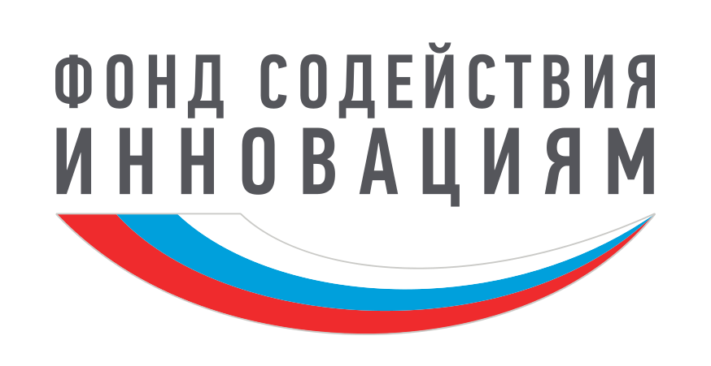
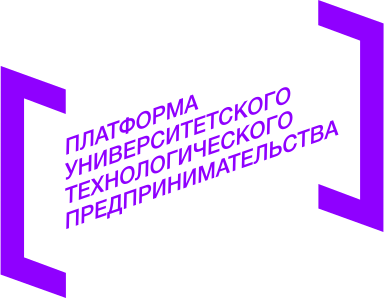

Кортизол в слюне.
От теста
к числу.
Флуоресцентные наночастицы, тест-полоска и камера смартфона. Разрабатываем систему количественного определения кортизола в слюне.
Образец слюны. Тест-кассета. Цифровое считывание.
Аналитическая химия × Биотехнологии × Цифровой анализ
01 / О ПРОДУКТЕ
Лабораторный принцип.
Портативная концепция.
Rapid Cortisol объединяет конкурентный иммуноанализ, флуоресцентные метки на основе диоксида кремния и цифровое считывание результата.
Кортизол участвует в регуляции обмена веществ и реакции организма на нагрузку. Анализ слюны интересен тем, что образец можно получить без забора крови. Концентрация зависит от времени суток и условий сбора; отдельное значение не является самостоятельной оценкой стресса или диагнозом.
В проекте исследуются наночастицы диоксида кремния с родамином B и их связывание с антителами к кортизолу. Адаптер с источником возбуждения и светофильтром предназначен для съёмки флуоресценции. Приложение преобразует характеристики изображения в расчётную концентрацию.
Созданы исследовательские прототипы
В материалах команды представлены адаптер, тест-полоски и приложение. Работа над реагентами и валидацией методики продолжается; клинические характеристики не подтверждены.
02 / КАК ЭТО РАБОТАЕТ
Четыре шага
к измерению.
Тест и цифровое считывание —
части одной разрабатываемой системы.
- 01
Получение образца
Образец слюны смешивается с буфером по исследовательскому протоколу. Условия сбора и подготовки требуют стандартизации.
- 02
Проведение теста
Подготовленный образец вносится на полоску и перемещается по мембране. Формирование сигнала основано на конкурентном связывании.
- 03
Съёмка смартфоном
Полоска помещается в адаптер. Камера регистрирует флуоресценцию через светофильтр при заданном освещении.
- 04
Расчёт концентрации
Программа анализирует выбранную область и применяет экспериментальную калибровку. Это исследовательский расчёт, а не диагноз.
03 / ТЕХНОЛОГИЯ
Химический сигнал.
Цифровая интерпретация.
В конкурентном формате кортизол образца и конъюгат БСА–кортизол на тестовой линии конкурируют за связывание с антителами на метке. В выбранной схеме рост концентрации должен уменьшать сигнал тестовой линии. Контрольная линия служит для проверки прохождения анализа; её отсутствие требует отклонения результата.
Перейти к приложениюИммунохроматографияАнтитела · БСА–кортизол · флуоресцентная метка
Оптическая регистрацияРодамин B · возбуждение · оптический фильтр
Калибровочная зависимостьОбработка изображения → концентрация
Диапазон, предел обнаружения, время анализа и погрешность будут опубликованы после проверки методики.
Калибровка — следующий шаг к воспроизводимому измерению
В презентации представлены четыре уровня концентрации и по три измерения на уровень. Это предварительные данные обработки изображения. Они ещё не подтверждают заявленный диапазон готового теста или его диагностическую точность.
Калибровку необходимо проверять для конкретной метки, камеры и условий съёмки, включая фон, воспроизводимость и влияние компонентов слюны.
Научная основа и ограничения
Конкурентный анализ кортизола с иммобилизованным БСА–кортизолом описан в научной литературе. Характеристики других тестов нельзя переносить на Rapid Cortisol.
Исследование конкурентного LFA для кортизола ↗Материалы проекта: сценарий от 22.06.2026 и презентация команды. Независимая клиническая валидация в предоставленных материалах отсутствует.
04 / ПРЕИМУЩЕСТВА КОНЦЕПЦИИ
Меньше барьеров
для исследования.
Свойства технологии и цели разработки,
которые мы объединяем в одном продукте.
- 01
Неинвазивный образец
Получение слюны не требует забора крови.
- 02
Смартфон как инструмент
Возможность использовать камеру для регистрации сигнала.
- 03
Цифровая обработка
Измерение цветовых каналов в выбранной области флуоресцентного изображения.
- 04
Потенциал портативности
Компактная концепция теста и адаптера для съёмки.
- 05
Количественный подход
Расчёт концентрации с последующей валидацией методики.
05 / ВЕБ-ПРИЛОЖЕНИЕ
Изображение теста.
Данные для анализа.
Экспериментальный анализатор принимает фотографию или изображение с камеры. Пользователь выделяет область, а программа анализирует цветовые каналы и рассчитывает концентрацию по заложенной формуле. Съёмка проводится с адаптером; произвольная фотография не заменяет измерение по протоколу.
Открыть приложение-анализатор ↗Приложение находится на стадии разработки и не предназначено для самостоятельной медицинской диагностики. Откроется в новой вкладке.
- 1
Откройте приложение
Перейдите в анализатор по кнопке.
- 2
Добавьте изображение
Разрешите доступ к камере или загрузите фотографию теста.
- 3
Выделите область
Укажите анализируемый участок изображения.
- 4
Посмотрите результат
Ознакомьтесь с расчётом по заложенной калибровочной формуле.
Демонстрационный результат на изображении — не медицинское заключение
06 / ПОДДЕРЖКА ПРОЕКТА
От научной идеи
к технологическому продукту.
Проект реализован при поддержке Фонда содействия инновациям в рамках программы «Студенческий стартап» мероприятия «Платформа университетского технологического предпринимательства» федерального проекта «Технологии».


07 / КОНТАКТЫ
Давайте развивать
технологию вместе.
Открыты к диалогу с исследователями, технологическими партнёрами и инвесторами. Расскажите, как мы можем сотрудничать.
Аромбаева Виктория Сергеевна — генеральный директор ООО «Ви-АнХим»